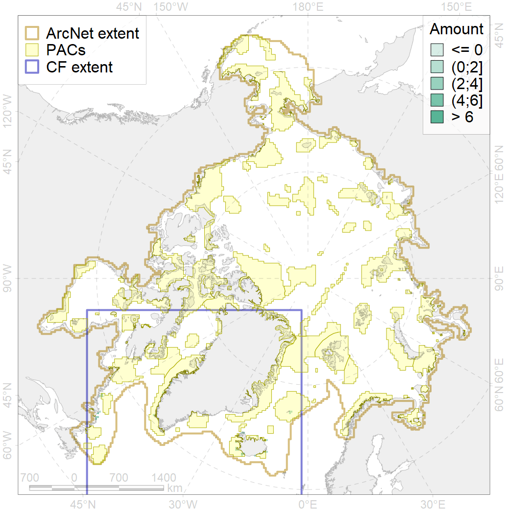
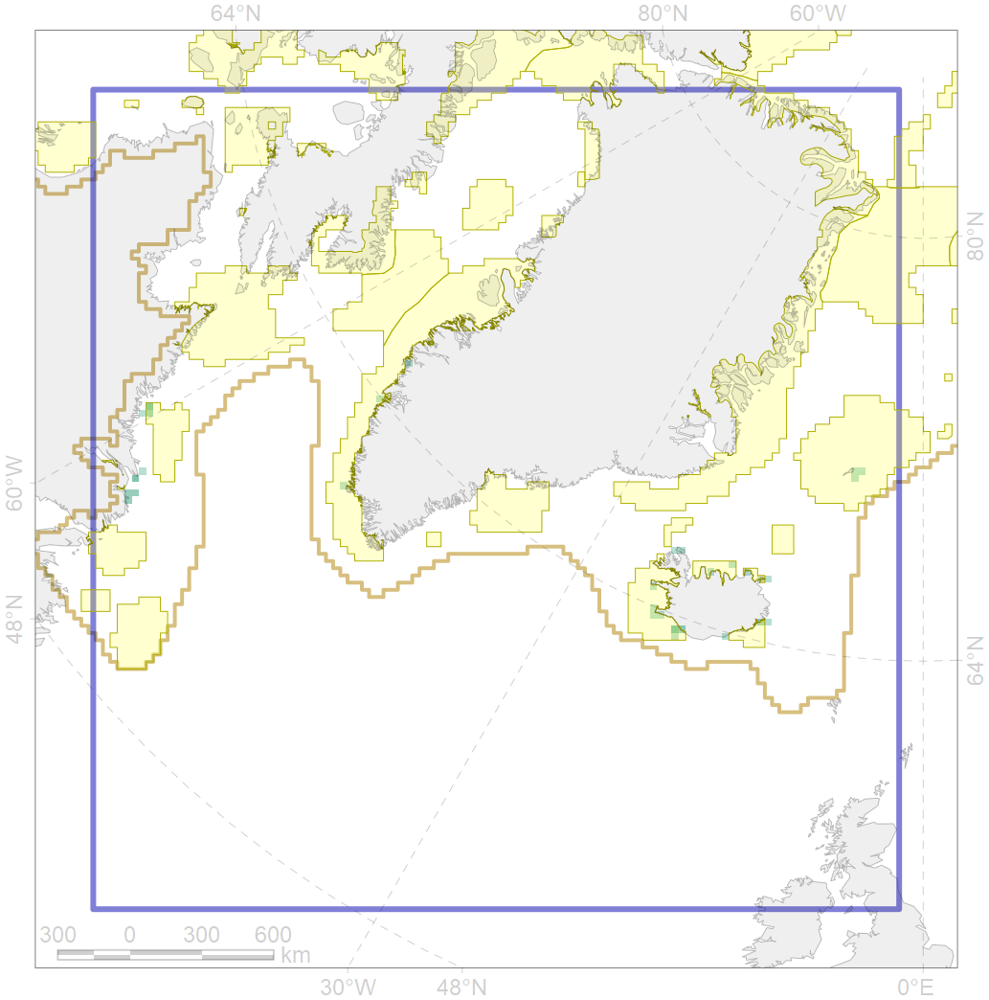

6075

| CF code | 6075 |
| CF name | Common murre (Uria aalge aalge) breeding grounds |
| Time Period | 1975-2015 |
| Source(s) | Circumpolar Seabird Data Portal http://axiom.seabirds.net/maps/js/seabirds.php?app=circumpolar#z=2&ll=NaN,0.00000, Lock et al 1994, Nettleship 1980, Nettleship et al 1984, Birkhead & Nettleship 1987, Christensen et al 2016, Jensen & Rasch 2010 |
| Seasonality | May-August |
| Depth Horizon | <0 m |
| Methodology | Field Data |
| Use Restrictions | Open source |
| Author Name | Gavrilo, Tertitski |
| Notes | |
| Scenario’s Target | 0.54 |
| Target Achievement | 0.569 (Scenario: 105.3%) |
| PAC | Share of the Total Amount within the PAC | Share of the Target Achievement for the ArcNet | PAC’s Contribution to the Target Achievement |
|---|---|---|---|
| 34 | 6.2% | 11.4% | 10.8% |
| 38 | 18.0%21.5% | 32.2%37.9% | 30.5%36.0% |
| 39 | 3.1%4.6% | 5.5%8.1% | 5.2%7.7% |
| 40 | 2.9%4.6% | 4.4%6.7% | 4.2%6.4% |
| 41 | 2.5%3.1% | 3.0%3.7% | 2.8%3.5% |
| 44 | 4.5%4.6% | 8.3%8.5% | 7.9%8.1% |
| 77 | 13.8% | 20.5% | 19.5% |
| inner | 51.1%58.5% | 85.2%96.8% | 80.9%92.0% |
| outer | 48.9%67.7% | 20.1%51.9% | 19.1%49.3% |
| † supplement values are for area consistence whereas principal values are for Accenter compatible gridded stats |